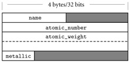
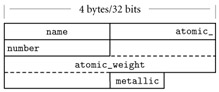
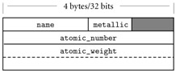

|
|
|
|
7.3 Records (Structures) and Variants (Unions)
Record types allow related data of heterogeneous types to be
stored and manipulated together. Some languages (notably Algol 68, C, C++, and
Common Lisp) use the term structure (declared with the keyword struct) instead of record. Fortran 90 simply calls its
records "types": they are the only form of programmer-defined type
other than arrays, which have their own special syntax. Structures in C++ are
defined as a special form of class (one in which members are globally
visible by default). Java has no distinguished notion of struct; its programmers use classes in all cases. C# uses a
reference model for variables of class types, and a value model for variables of struct types. C# structs do not support inheritance. For the sake of simplicity, we
will use the term "record" in most of our discussion to refer to the
relevant construct in all these languages.
|
|
In C, a simple record might be defined as follows.
struct
element {
char name[2];
int atomic_number;
double atomic_weight;
_Bool metallic;
};
|
|
|
|
In Pascal, the corresponding declarations would be
type
two_chars = packed array [1..2] of char;
(* Packed arrays will be
explained in Example 7.43.
Packed
arrays of char are compatible with quoted strings. *)
type
element = record
name : two_chars;
atomic_number : integer;
atomic_weight : real;
metallic : Boolean
end;
|
|
Example 7.37: Accessing
record fields
|
|
Each of the record components is known as a field. To
refer to a given field of a record, most languages use "dot"
notation. In C:
element
copper;
const
double AN = 6.022e23;
/* Avogadro's number */
...
copper.name[0]
= 'C'; copper.name[1] = 'u';
double
atoms = mass / copper.atomic_weight * AN;
Pascal notation is similar to that of C. In Fortran 90 one
would say copper%name and copper%atomic_weight. Cobol and Algol 68 reverse the order of the field and
record names: name of copper and atomic_weight of copper. ML's notation isalso
"reversed," but uses a prefix #: #name copper and #atomic_weight copper. (Fields of an ML record can also be extracted using
patterns.) In Common Lisp, one would say (element-name
copper) and (element-atomic_weight
copper).
Design & Implementation
Struct tags and typedef in C and C++
One of the peculiarities of the C type system is that struct tags are not exactly type names. In Example
7.35, the name of the type is the two-word phrase struct
element. We used this name to declare the element_yielded field of the second struct in Example
7.38. To obtain a one-word name, one can say typedef
struct element element_t, or even typedef
struct element element: struct tags and typedef names have separate name spaces, so the same name can be
used in each. C++ eliminates this idiosyncrasy by allowing the struct tag to be
used as a type name without the struct prefix; in effect, it performs the typedef implicitly.
|
|
|
|
|
|
Most languages allow record definitions to be nested. Again
in C:
struct
ore {
char name[30];
struct {
char
name[2];
int
atomic_number;
double atomic_weight;
_Bool metallic;
} element_yielded;
};
Alternatively, one could say
struct
ore {
char name[30];
struct element
element_yielded;
};
In Fortran 90 and Common Lisp, only the second alternative
is permitted: record fields can have record types, but the declarations cannot
be lexically nested. Naming for nested records is straightforward: malachite.element_yielded.atomic_number in Pascal or C; atomic_number
of element_yielded of malachite in Cobol; #atomic_number
#element_yielded malachite in ML; (element-atomic_number
(ore-element_yielded malachite)) in
Common Lisp.
|
|
Example 7.39: ML
records and tuples
|
|
As noted in Example 7.14, ML differs from most languages in specifying
that the order of record fields is insignificant. The ML record value {name
= "Cu", atomic_number = 29, atomic_weight = 63.546, metallic = true} is the same as the value {atomic_number
= 29, name = "Cu", atomic_weight = 63.546, metallic = true} (they will test true for equality). ML tuples are defined as abbreviations for
records whose field names are small integers. The values ("Cu",
29), {1
= "Cu", 2 = 29}, and {2
= 29, 1 = "Cu"} will all test true for equality.
|
|
7.3.2 Memory Layout and Its Impact
The fields of a record are usually stored in adjacent
locations in memory. In its symbol table, the compiler keeps track of the
offset of each field within each record type. When it needs to access a field,
the compiler typically generates a load or store instruction with displacement
addressing. For a local object, the base register is the frame pointer; the
displacement is the sum of the record's offset from the register and the
field's offset within the record. On a RISC machine, a global record is accessed
in a similar way, using a dedicated globals pointer register as base. On
a CISC machine, the compiler may access the field directly at its absolute
address or, if many fields are to be accessed in a short period of time, it may
load a temporary register with the (absolute) address of the record and then
use the field's offset as displacement.
Example 7.40: Memory
layout for a record type
|
|
A likely layout for our element type on a 32-bit machine appears in Figure
7.1. Because the name
field is only two characters long, it occupies two bytes in memory. Since atomic_number is an integer, and must (on most machines) be word-aligned,
there is a two-byte "hole" between the end of name and the beginning of atomic_number. Similarly, since Boolean variables (in most language
implementations) occupy a single byte, there are three bytes of empty space
between the end of the metallic field and the next aligned location. In an array of elements, most compilers would devote 20 bytes to every member of
the array.

Figure 7.1: Likely layout in memory
for objects of type element on a 32-bit machine. Alignment restrictions lead to the
shaded "holes."
|
|
Example 7.41: Nested
records as values
|
|
In a language with a value model of variables, nested
records are naturally embedded in the parent record, where they function as
large fields with word or double-word alignment. In a language with a reference
model of variables, fields of record type are typically references to data in
another location. The difference is a matter not only of memory layout, but also
of semantics. In Pascal, the following program prints a 0.
type
T = record
j :
integer;
end;
S = record
i :
integer;
n :
T;
end;
var
s1, s2 : S;
...
s1.n.j
:= 0;
s2
:= s1;
s2.n.j
:= 7;
writeln(S1.n.j); (*
prints 0 *)
The assignment of s1 into s2
copies the embedded T.
|
|
Example 7.42: Nested
records as references
|
|
By contrast, the following Java program prints a 7. (Simple
classes in Java play the role of structs.)
class
T {
public int j;
}
class
S {
public int i;
public T n;
}
...
S
s1 = new S();
s1.n
= new T();
// fields initialized to 0
S
s2 = s1;
s2.n.j
= 7;
System.out.println(s1.n.j); // prints 7
Here the assignment of s1 into s2
has copied only the reference, so s2.n.j is an alias for s1.n.j.
|
|
Example 7.43: Layout of
packed types
|
|
A few languages―notably Pascal―allow the programmer to
specify that a record type (or an array, set, or file type) should be packed:
type
element = packed record
name : two_chars;
atomic_number : integer;
atomic_weight : real;
metallic : Boolean
end;
The keyword packed indicates that the compiler should optimize for space
instead of speed. In most implementations a compiler will implement a packed
record without holes, by simply "pushing the fields together." To
access a nonaligned field, however, it will have to issue a multi-instruction
sequence that retrieves the pieces of the field from memory and then
reassembles them in a register. A likely packed layout for our element type (again for a 32-bit machine) appears in Figure
7.2. It is 15 bytes in length. An array of packed element records would probably devote 16 bytes to each member of
the array; that is, it would align each element. A packed array of packed
records might devote only 15 bytes to each; only every fourth element would be
aligned. Ada, Modula-3, and C provide more elaborate packing mechanisms, which
allow the programmer to specify precisely how many bits are to be devoted to
each field.

Figure 7.2: Likely memory layout for
packed element records. The atomic_number and atomic_weight fields are nonaligned, and can only
be read or written (on most machines) via multi-instruction sequences.
|
|
Example 7.44: Assignment
and comparison of records
|
|
Most languages allow a value to be assigned to an entire
record in a single operation:
my_element
:= copper;
Ada also allows records to be compared for equality (if
my_element = copper then …),
but most other languages (including Pascal, C, and their successors) do not, though C++ allows the programmer to
define equality tests for individual record types.
|
|
For small records, both copies and comparisons can be
performed in-line on a field-by-field basis. For longer records, we can save
significantly on code space by deferring to a library routine. A block_copy routine can take source address, destination address, and
length as arguments, but the analogous block_compare routine would fail on records with different (garbage) data
in the holes. One solution is to arrange for all holes to contain some
predictable value (e.g., zero), but this requires code at every elaboration
point. Another is to have the compiler generate a customized field-by-field
comparison routine for every record type. Different routines would be called to
compare records of different types. Languages like Pascal and C avoid the whole
issue by simply outlawing full-record comparisons.
Example 7.45: Minimizing
holes by sorting fields
|
|
In addition to complicating comparisons, holes in records
waste space. Packing eliminates holes, but at potentially heavy cost in access
time. A compromise, adopted by some compilers, is to sort a record's fields
according to the size of their alignment constraints. All byte-aligned fields
might come first, followed by any half-word aligned fields, word-aligned fields,
and (if the hardware requires) double-word―aligned fields. For our element type, the resulting rearrangement is shown in Figure
7.3.

Figure 7.3: Rearranging record
fields to minimize holes.
By sorting fields according to the size of their alignment constraint, a
compiler can minimize the space devoted to holes, while keeping the fields
aligned.
|
|
In most cases, reordering of fields is purely an
implementation issue: the programmer need not be aware of it, so long as all
instances of a record type are reordered in
the same way. The exception occurs in systems programs, which sometimes
"look inside" the implementation of a data type with the expectation
that it will be mapped to memory in a particular way. A kernel programmer, for
example, may count on a particular layout strategy in order to define a record that
mimics the organization of memory-mapped control registers for a particular
Ethernet device. C and C++, which are designed in large part for systems
programs, guarantee that the fields of a struct will be allocated in the order declared. The first field is
guaranteed to have the coarsest alignment required by the hardware for any type
(generally a four- or eight-byte boundary). Subsequent fields have the natural
alignment for their type. Fortran 90 allows the programmer to specify that
fields must not be reordered; in the absence of such a specification the
compiler can choose its own order. To accommodate systems programs, Ada and C++
allow the programmer to specify nonstandard alignment for the fields of
specific record types.
Design & Implementation
The order of record fields
Issues of record field order are intimately tied to
implementation tradeoffs: Holes in records waste space, but alignment makes for
faster access. If holes contain garbage we can't compare records by looping
over words or bytes, but zeroing out the holes would incur costs in time and
code space. Predictable layout is important for mirroring hardware structures
in "systems" languages, but reorganization may be advantageous in
large records if we can group frequently accessed fields together, so they lie
in the same cache line.
|
|
Example 7.46: Pascal with statement
|
|
In programs with complicated data structures, manipulating
the fields of a deeply nested record can be awkward:
ruby.chemical_composition.elements[1].name
:= 'Al';
ruby.chemical_composition.elements[1].atomic_number
:= 13;
ruby.chemical_composition.elements[1].atomic_weight
:= 26.98154;
ruby.chemical_composition.elements[1].metallic
:= true;
Pascal provides a with statement to simplify such constructions:
with
ruby.chemical_composition.elements[1] do begin
name := 'Al';
atomic_number := 13;
atomic_weight := 26.98154;
metallic := true
end;
|
|
Pascal with statements are examined in more detail on the PLP CD. They
are generally considered an improvement on the earlier elliptical references
of Cobol and PL/I. They still suffer from several limitations, however, most of
which are addressed in Modula-3 and Fortran 2003. Similar functionality can be achieved
with nested scopes in languages like Lisp and ML (which use a reference model
of variables), and in languages like C and C++, which allow the programmer to
create pointers or references to arbitrary objects.
7.3.4 Variant Records (Unions)
Programming languages of the 1960s and 1970s were designed
in an era of severe memory constraints. Many allowed the programmer to specify
that certain variables (presumably ones that would never be used at the same
time) should be allocated "on top of" one another, sharing the same
bytes in memory. C's syntax, heavily influenced by Algol 68, looks very much
like a struct:
union
{
int i;
double d;
_Bool b;
};
The overall size of this union would be that of its
largest member (presumably d). Exactly which bytes of d would be overlapped by i and b is
implementation dependent, and presumably influenced by the relative sizes of
types, their alignment constraints, and the endian-ness of the hardware.
In practice, unions have been used for two main purposes.
The first arises in systems programs, where unions allow the same set of bytes
to be interpreted in different ways at different times. The canonical example
occurs in memory management, where storage may sometimes be treated as
unallocated space (perhaps in need of "zeroing out"), sometimes as
bookkeeping information (length and header fields to keep track of free and
allocated blocks), and sometimes as user-allocated data of arbitrary type.
While nonconverting type casts can be used to implement heap management routines,
as described on page 309, unions are a better indication of the
programmer's intent: the bits are not being reinterpreted, they are being used
for independent purposes. [6]
Example 7.47: Motivation
for variant records
|
|
The second common purpose for unions is to represent
alternative sets of fields within a record. A record representing an employee,
for example, might have several common fields (name, address, phone, department, ID
number) and various other fields depending on whether the person in question
works on a salaried, hourly, or consulting basis. C unions are awkward when used
for this purpose. A much cleaner syntax appears in the variant records
of Pascal and its successors, which allow the programmer to specify that
certain (potentially hierarchical) sets of fields should overlap one another in
memory.
|
|
On the CD IN MORE DEPTH
We discuss unions and variant records in more detail on the
PLP CD. Topics we consider include syntax, safety, and memory layout issues.
Safety is a particular concern: where nonconverting type casts allow a
programmer to circumvent the language's type system explicitly, a naive
realization of unions makes it easy to do so by accident. Algol 68 and Ada
impose limits on the use of unions and variant records that allow the compiler
to verify, statically, that all programs are type-safe. We also note that
inheritance in object-oriented languages provides an attractive alternative to
type-safe variant records in most cases. This observation largely accounts for
the omission of unions and variant records from more recent languages.
20.
What are struct tags in C? How are they related to
type names? How did they change in C++?
21.
Summarize the distinction between records and tuples
in ML. How do these compare to the records of languages like C and Ada?
22.
Discuss the significance of "holes" in records.
Why do they arise? What problems do they cause?
23.
Why is it easier to implement assignment than comparison for
records?
24.
What is packing? What are its advantages and
disadvantages?
25.
Why might a compiler reorder the fields of a record? What
problems might this cause?
26.
Briefly describe two purposes for unions/variant records.
[6] On the CD By contrast, the other example on page 309―examination
of the internal structure of a floating-point number―does indeed reinterpret
bits. Unions can also be used in this case (Exercise 7.30), but here a
nonconverting cast is a better indication of intent.